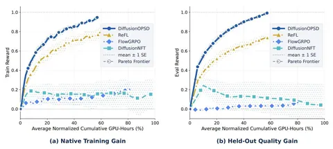

Разбираем DiffusionOPSD — статью от ByteDance, в которой предлагают способ self-дистилляции, продолжающий идеи Diffusion NFT.
Впечатление от работы смешанное, из-за избыточных обозначений и инженерных деталей. Но на самом деле идея интересная и несложная.
Допустим, мы работаем с text-to-image и через flow matching хотим получить финальную картинку X0. Есть много reward-based-подходов, но везде возникает проблема.
Основные части композиции закладываются в самом начале денойзинга. Если что-то нарисовалось совсем плохо, исправлять это нужно на ранних стадиях. При этом реворд получаем для финальной картинки, а чтобы оптимизировать всю траекторию, нужно прокидывать градиент через реворд-модель и много шагов диффузии.
Есть разные решения.
- ReFL предлагает на поздних стадиях делать одношаговое предсказание X0 и прокидывать градиент только через этот скачок. Но нужен дифференцируемый реворд, а изменения плохо дотягиваются до ранних шагов.
- FlowGRPO использует RL: каждый стейт диффузии рассматривается как стейт агента, а переходы оптимизируются через policy gradient.
- Diffusion NFT обходится без сложной оптимизации policy gradient. Собираем хорошие и плохие примеры и обучаем модель через contrastive learning, притягивая предсказание ученика к положительным и отталкивая от отрицательных с учётом реворда.
Эту идею продолжает OPSD.
Авторы отталкиваются от утверждения: мы оцениваем реворд для финальной картинки X0, а затем используем его, чтобы определить направления изменения velocity для промежуточных состояний Xt.
Flow matching моделирует расшумление по прямой, но на практике траектория получается непрямой. Поэтому оптимальное направление изменения velocity для промежуточной точки может отличаться от направления для X0. Поэтому авторы предлагают рассматривать глобальный (оценка для X0) реворд и локальный (для промежуточной точки Zq).
В OPSD учитель — EMA-версия онлайн-модели, усреднённая по предыдущим шагам. Она стабильнее и генерирует траектории. Внешняя дифференцируемая реворд-модель всё ещё нужна.
Глобальный реворд
EMA-учитель генерирует траекторию до заранее выбранной промежуточной точки Zq, затем продолжает инференс до X0, для которого рассчитывается endpoint reward.
Глобальный реворд оценивает перспективность траектории. Для каждого промпта генерируют несколько картинок, считают нормализованный advantage и получают вес сэмпла относительно остальных. Так определяют качество семпла и перевзвешивают примеры при обучении.
Локальный реворд
Из точки Zq делаем одношаговое предсказание Y0 и начинаем исследовать локальный reward landscape. Надо найти для Y0 положительного и отрицательного соседей. Так как реворд-модель дифференцируемая, можно двигаться по её градиенту и антиградиенту. В одном направлении реворд должен расти, в другом — падать.
Но если уйти слишком далеко от исходной точки, примеры потеряют актуальность. Поэтому авторы ограничивают движение шаром с адаптивным радиусом. После каждого шага градиентного подъёма или спуска точка проецируется обратно в этот шар.
Обучение студента
Дальше происходит стандартный MSE-фит. Есть предсказания студента и учителя, а также положительное и отрицательное направления, полученные через локальный реворд.
По аналогии с Diffusion NFT пытаемся развернуть вектор изменения предсказания студента так, чтобы притягиваться к положительному направлению и отталкиваться от отрицательного. Глобальный реворд задаёт веса этих направлений.
Результаты и что смутило
В экспериментах OPSD оптимизирует заданный реворд лучше Diffusion NFT и ReFL.
Авторы много рассуждают о том, почему неправильно использовать реворд для X0 при оптимизации промежуточных состояний.
При этом в экспериментах с разными уровнями шума оптимальным оказался 0,27, при котором локальный и глобальный реворды довольно близки. А проблема с оценкой более зашумлённых состояний остаётся актуальной.
Разбор подготовил
CV Time
